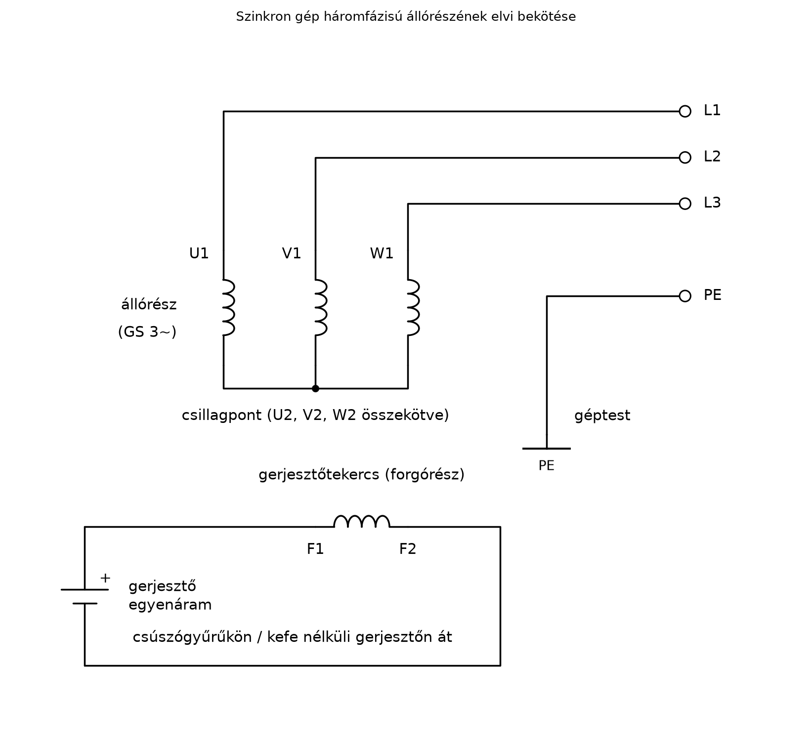
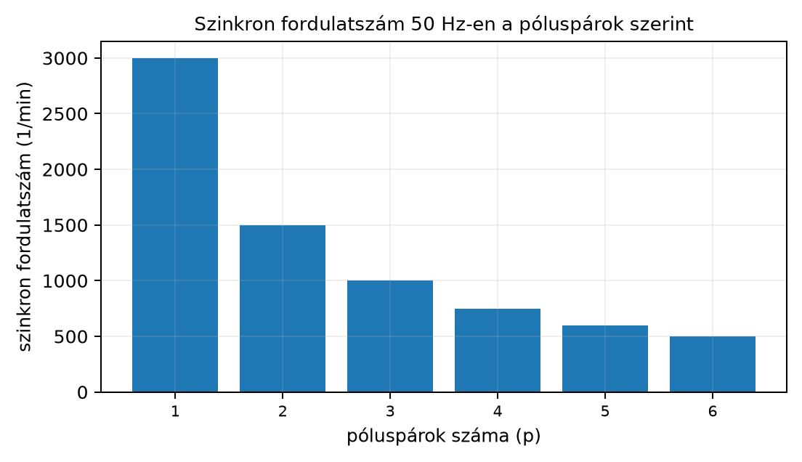

Ha egy kórház tartalék áramforrásánál a dízelmotor „nem jár pontosan”, vagy egy nagy kompresszorhajtásnál állandó fordulatszámot kell tartani, akkor szinkron géppel találkozol. Az erőművi generátorok túlnyomó része szinkron generátor, a nagy ipari hajtások egy részénél pedig szinkron motort használnak, mert a fordulatszáma független a terheléstől, és a meddőteljesítményét a gerjesztéssel lehet szabályozni.
A szinkron gép első ránézésre sokban hasonlít az aszinkron gépre, de a forgórésze alapvetően más. Míg az aszinkron gép forgórészében a szükséges mágneses teret indukció hozza létre, addig a szinkron gép forgórésze egyenárammal gerjesztett mágneskerék vagy állandó mágnes. Ebből következik a legfontosabb tulajdonsága: a forgórész pontosan a forgó mágneses mezővel együtt, azzal szinkronban forog.
Először az állórész oldalról nézzük a gépet. Az alábbi elvi kapcsolási rajzon a három fáziskapcsot (U1, V1, W1, mindegyik külön fázisvezetőn), a csillagba kötött állórész-tekercselést és a forgórész egyenáramú gerjesztőkörét (F1–F2) látod; a géptest a PE-re csatlakozik. A gerjesztőkör az, ami a szinkron gépet az aszinkrontól megkülönbözteti.

A fordulatszámot a hálózati frekvencia és a póluspárok száma határozza meg. Ez az egyik legfontosabb összefüggés, ezért érdemes rögtön számokkal is megnézni.

A diagramról leolvasható, hogy 50 Hz-en egy kétpólusú gép (p = 1 póluspár) 3000 1/min, egy négypólusú gép (p = 2) 1500 1/min, egy tizenkét pólusú gép (p = 6) pedig 500 1/min szinkron fordulatszámon forog.
Definíció. A szinkron gép olyan villamos forgógép, amelynek állórészén háromfázisú (ritkábban egyfázisú) váltakozó áramú tekercselés, forgórészén pedig egyenárammal gerjesztett póluskerék vagy állandó mágnes van. Üzemállapotától függően szinkron generátorként vagy szinkron motorként dolgozik.
A gép két alapvető szerkezeti egysége:
Megjegyzés. A magyar gyakorlatban a betűvel általában a póluspárok számát jelöljük, a pólusok száma pedig . Tehát egy „négypólusú” gépnél .
A fordulatszám alapösszefüggése:
Összefüggés. A szinkron fordulatszám:
ahol:
Ez onnan adódik, hogy egy póluspárú gépnél egy teljes periódus egy teljes fordulatnak felel meg. 50 Hz-en tehát egy póluspárnál másodpercenként 50 fordulat történik, azaz percenként 3000 fordulat. Két póluspárnál egy periódus csak fél fordulatot ad, ezért a fordulatszám 25 fordulat/s, azaz 1500 1/min.
A forgórész kialakítása szerint két fő típust különböztetünk meg.
Kiálló pólusú forgórész (póluskerék). A pólusok jól láthatóan, különálló pólussarukkal emelkednek ki a tengelyből. A pólustestekre koncentrált gerjesztő tekercseket helyeznek. Ez a kialakítás ott alkalmas, ahol sok póluspár kell, tehát a fordulatszám viszonylag alacsony. Jellemzően vízerőművi generátorokban, lassú dízelgenerátorokban és nagy pólusszámú szinkron motorokban használják. A kiálló pólusú gép légrése a pólus alatt kisebb, a pólusok között nagyobb, ezért a mágneses kör „irányfüggő”.
Hengeres pólusú (sima pólusú) forgórész. A forgórész egy hengeres acéltömbből készül, hosszirányú hornyokban elosztott gerjesztő tekercseléssel. A légrés gyakorlatilag egyenletes. Ez a kialakítás nagy fordulatszámra alkalmas, mert a mechanikai igénybevételt jobban bírja. Jellemzően hőerőművi turbógenerátorokban és gázturbinás generátorokban alkalmazzák, 3000 1/min (kétpólusú) vagy 1500 1/min (négypólusú) fordulaton.
Példa. Egy 50 Hz-es vízerőművi generátort 125 1/min fordulattal hajt a turbina. Mekkora a póluspárok és a pólusok száma?
Adott:
,
Keresett:
,
majd
Képlet:
Behelyettesítés:
Eredmény:
póluspár, azaz
pólus.
Ellenőrzés: 50 Hz-en 1 póluspár 3000 1/min; 24
póluspárnál
1/min, ami megegyezik. Ez a gép csak kiálló pólusú lehet, hengeres
pólusú rotor ilyen sok pólussal és ilyen alacsony fordulaton nem
épül.
A forgórész mágneses terét létre kell hozni. Erre több megoldás létezik.
Egyenáramú gerjesztés csúszógyűrűvel és kefével. A forgórész gerjesztő tekercsének két vége két, a tengelyre szerelt csúszógyűrűre csatlakozik. A csúszógyűrűkhöz szénkefék nyomódnak, ezeken át kapja a forgórész a külső gerjesztő egyenáramot. A gerjesztő forrás lehet külön egyenáramú generátor, vagy egyenirányítós gerjesztő. Ez a megoldás egyszerű, jól látható, de a kefék és csúszógyűrűk kopnak, karbantartást igényelnek, és a kefekopás szénport okozhat.
Kefe nélküli (brushless) gerjesztés. Nagyobb gépeknél gyakori. A fő szinkron gép tengelyére egy kis háromfázisú gerjesztő generátort építenek. Ennek állórészét gerjesztik, a forgórészén háromfázisú tekercselés van, amelynek kimenetét a tengelyre szerelt forgó diódahíd egyenirányítja. Az így kapott egyenáram közvetlenül, csúszógyűrű és kefe nélkül táplálja a fő gép forgórészének gerjesztő tekercsét. A gerjesztőáramot az állórész oldalról lehet szabályozni, így a teljes rendszer karbantartásigénye kisebb.
Állandó mágneses gerjesztés. Kis teljesítményű szinkron gépeknél, szervomotoroknál, egyes kisgenerátoroknál és több modern hajtásnál a forgórész állandó mágnesből készül. Ilyenkor nincs szükség gerjesztő egyenáramra, de a gerjesztés nem szabályozható olyan egyszerűen.
A gerjesztőáram szerepe kettős: beállítja az indukált feszültség nagyságát, és befolyásolja a gép meddőteljesítmény-felvételét vagy -leadását. Ezt részletesebben a Hálózatra kapcsolás, V-görbe, fázisjavítás és aggregátor alfejezetben vizsgáljuk.
Az állórész háromfázisú tekercselése ugyanazt a forgó mágneses mezőt hozza létre, amit az aszinkron gépnél a Szerkezet és működési elv, forgó mágneses mező alfejezetben tanultál. A különbség a forgórészben van.
Ha egy hajtógép (gőzturbina, gázturbina, vízturbina, dízelmotor) a gerjesztett póluskereket állandó fordulattal forgatja, akkor a pólusok mágneses tere folyamatosan metszi az állórész tekercsvezetőit. A mozgási indukció miatt az állórész tekercseiben váltakozó feszültség indukálódik.
Összefüggés. Szinuszos fluxuseloszlást feltételezve az egy fázisban indukált feszültség effektív értéke:
ahol:
A tényező a szinuszos indukcióból adódik: a csúcsérték , az effektív érték ennek -szerese, így a tényező .
A gyakorlatban a pontos értéket a tekercselési tényező, a telítés és a tekercselés kialakítása is befolyásolja, ezért az egyszerű képlet becslésre való. A tervezésnél a gyártói adatlap és a hatályos szabvány a mérvadó.
Számítás. Egy 50 Hz-es szinkron generátor egy fázisának effektív menetszáma , a pólusonkénti fluxus . Mekkora a fázisfeszültség?
Adott:
,
,
Keresett:
Képlet:
Behelyettesítés:
Ellenőrzés: ha a gép vonali feszültsége
,
akkor
,
ami a 400 V-os hálózat közelébe esik. A kerekítések és a tekercselési
tényező miatt reális példa.
A generátor frekvenciája tehát csak a hajtás fordulatszámától és a póluspárok számától függ:
A feszültséget pedig elsősorban a gerjesztőárammal szabályozzák. Ha a generátort önálló szigetüzemben használják, a hajtómotor fordulatszám-szabályozója tartja a frekvenciát, a feszültségszabályozó (AVR) pedig a gerjesztést.
Ha a háromfázisú állórészt rákapcsolják a hálózatra, az állórész forgó mágneses mezőt hoz létre. A gerjesztett póluskerék északi és déli pólusai „beakadnak” a forgó mező ellentétes pólusaiba, és a forgórész a mezővel azonos, szinkron fordulattal forog.
A szinkronmotor legfontosabb üzemi előnye, hogy a fordulatszáma nem csökken a terhelőnyomaték növekedésével, amíg a terhelés a megengedett határon belül van. Terheléskor a forgórész pólustengelye a forgó mezőhöz képest egy kis terhelési szöggel hátrafordul, de a fordulatszám változatlan marad. Ha a terhelés túl nagy, a gép kiesik a szinkronból és megáll, ezért a szinkronmotort mindig a billenőnyomaték alatt kell üzemeltetni.
A szinkronmotor hátránya, hogy önmagában, álló helyzetből nem tud egyszerűen felpörögni a forgó mezővel szinkronba, mert a nagy tehetetlenségű gerjesztett rotor nem tudja azonnal követni a hirtelen elinduló mezőt. Gyakori megoldás, hogy a pólussarukba egy indító/ csillapító kalickát építenek. A gép ezzel aszinkron motorként felfut; felfutás közben a gerjesztőtekercset kisütő ellenálláson át rövidre zárják, majd a szinkron fordulatszám közelében a gerjesztés rákapcsolása után a rotor behúz a szinkron fordulatra. Más megoldás a frekvenciaváltós indítás, amikor a frekvenciát alacsony értékről fokozatosan emelik.
A rotortípusok gyakorlati okból különülnek el.
Ugyanez a logika érvényes a motoros hajtásokra is: nagy fordulatszámú kompresszorhajtáshoz hengeres pólusú szinkronmotor, lassú, nagy nyomatékú hajtáshoz kiálló pólusú szinkronmotor illik.
| Jellemző | Szinkron gép | Aszinkron gép |
|---|---|---|
| Forgórész mágneses tere | egyenárammal gerjesztett vagy állandó mágnes | a forgó mező indukálja |
| Fordulatszám | pontosan szinkron, | terheléssel kissé csökken, |
| Szlip | üzemben jellemzően | |
| Meddőteljesítmény | gerjesztéssel szabályozható | hálózatból fogyaszt |
| Indítás | segédberendezést igényelhet | általában egyszerűen, közvetlenül indítható |
| Ár, bonyolultság | általában drágább, bonyolultabb | egyszerűbb, olcsóbb |
Továbbvitt eredmény. Az itt bevezetett szinkron fordulatszám képlet, a gerjesztőáram szerepe és a póluskiválasztás közvetlenül kell a(z) Hálózatra kapcsolás, V-görbe, fázisjavítás és aggregátor alfejezetben, ahol a szinkronizálást, a hálózatra kapcsolást és a meddőteljesítmény-szabályozást tárgyaljuk. A gerjesztett forgórész egyenáramú táplálása, a kefés és kefe nélküli megoldás pedig előkészíti a(z) Egyenáramú gép: szerkezet, gerjesztés, indítás alfejezetet.
Szabvány. A villamos forgógépek általános követelményeit az MSZ EN 60034 sorozat tárgyalja. A hálózatra kapcsolás és a hálózati párhuzamos üzem részletes feltételeit a hálózati engedélyes előírásai rögzítik. A pontos kiadásokat és határértékeket minden kivitelezés vagy vizsgálat előtt ellenőrizni kell. (ellenőrizendő: aktuális szabványkiadás és hálózati engedélyesi előírás)
Egy kórházi tartalék áramforrás dízelaggregátorának 400 V-os szinkron generátora négypólusú, ezért a szinkron fordulatszáma 1500 1/min. Az átadás előtti ellenőrzésen a kezelőpanel 51,2 Hz-et és 418 V vonali feszültséget mutat.
A szerelő először kiszámolja, hogy a frekvencia miért magas. Négypólusú gépnél , tehát:
A hajtómotor tehát nem 1500, hanem 1536 1/min fordulaton jár. A szerelő a dízelmotor fordulatszám-szabályozóját úgy állítja be, hogy a frekvencia pontosan 50,0 Hz legyen, ami 1500 1/min-es generátorfordulatnak felel meg. Ezután a feszültségszabályozó (AVR) alapjelét úgy módosítja, hogy a kapocsfeszültség terheletlen állapotban is 400 V körül legyen. Végül próbaterheléssel ellenőrzi, hogy a feszültség és a frekvencia a megengedett sávon belül marad-e.
Biztonsági korlát. A szinkron gépen, annak kapcsain, gerjesztőkörén és hajtásán végzett munkát csak feszültségmentesítés, reteszelés és a hajtás kikapcsolása után szabad végezni. Hálózati feszültségen és forgó gépen tanuló önállóan nem dolgozhat.
Hiba. A szinkron generátor hajtását úgy állítják be,
hogy a tengely fordulatszáma 1450–1480 1/min legyen, mert „az aszinkron
motoroknál is ennyi”. A szinkron gépnél ilyenkor nem 50 Hz, hanem
például 48,3 Hz keletkezik, ami zavarokat okozhat.
Helyes gyakorlat: a frekvenciát a
képlet szerint pontosan 50 Hz-re állítják, azaz négypólusú gépnél 1500
1/min-re.
Hiba. A kefés gerjesztésű gépnél a csúszógyűrűt és a
keféket nem ellenőrzik. A kopott vagy beragadt kefe miatt a
gerjesztőáram megszakad, a generátor feszültsége összeomlik,
motorüzemben pedig a gép kieshet a szinkronból.
Helyes gyakorlat: a kefék hosszát, rugónyomását, a
csúszógyűrűk felületét és a kefe-átmenetet a gyártó előírása szerint
rendszeresen ellenőrzik.
Hiba. A szinkronmotort úgy indítják aszinkron módon,
hogy a gerjesztőtekercs nyitva marad, vagy a gerjesztést már álló
helyzetben rákapcsolják. A nyitott gerjesztőtekercsben felfutáskor
veszélyesen nagy feszültség indukálódik (átüthet a szigetelésen, a
csúszógyűrűn életveszélyes lehet), a korán bekapcsolt gerjesztés pedig
lengést és nagy áramlökést okoz; a gép nem ér szinkron fordulatra, vagy
a védelme lekapcsol.
Helyes gyakorlat: felfutáskor a gerjesztőtekercs kisütő
ellenálláson át rövidre zárt; a gerjesztést a szinkron fordulatszám
közelében (kb. 95 %, ellenőrizendő: gyártói adat) a gyártó által előírt
automatika kapcsolja rá, az indítókalicka segítségével.
1. feladat (A). Egy 50 Hz-es szinkron generátor póluspárok száma . Mekkora a szinkron fordulatszáma?
2. feladat (A). Sorold be a következő alkalmazásokat a megfelelő rotortípushoz: gőzturbinás erőművi generátor 3000 1/min fordulaton; vízerőművi generátor 125 1/min fordulaton!
3. feladat (B). Egy szinkron generátor fázisonkénti effektív menetszáma , a pólusonkénti fluxus , a frekvencia 50 Hz. A tekercselési tényezőt hanyagold el. Mekkora lesz a fázisfeszültség?
4. feladat (B). Egy négypólusú szinkron generátor tengelyét 1470 1/min fordulattal forgatják. Mekkora lesz a kimeneti frekvencia? Miért nem megfelelő ez a fordulatszám 50 Hz-es hálózathoz?
5. feladat (C). Egy vízturbina 187,5 1/min fordulattal hajt egy 50 Hz-es szinkron generátort. Hány pólusú a generátor, és milyen forgórész-kialakítás indokolt?
6. feladat (D). Egy tartalék aggregátor négypólusú szinkron generátoránál a kezelőpanel 51,2 Hz frekvenciát és 418 V vonali feszültséget mutat. Milyen sorrendben, és mit állítanál be a helyes 50 Hz és 400 V eléréséhez? Fogalmazd meg a lépéseket ellenőrzési pontokkal!
Önellenőrzés – válaszok
1. feladat megoldása
2. feladat megoldása
3. feladat megoldása
A fázisfeszültség körülbelül 213 V.
4. feladat megoldása
Négypólusú gépnél . A frekvencia:
Ez nem megfelelő 50 Hz-es hálózathoz, mert a szinkron generátornak pontosan a hálózati frekvenciát kell adnia. A hajtás fordulatszámát 1500 1/min-re kell beállítani.
5. feladat megoldása
póluspár.
A pólusok száma
.
Mivel a fordulatszám alacsony és a pólusszám nagy, kiálló
pólusú forgórész indokolt.
6. feladat megoldása
Először a frekvenciát és a fordulatot kell rendbe tenni. Négypólusú gépnél . A mért 51,2 Hz-hez tartozó fordulatszám:
Ezért a dízelmotor fordulatszám-szabályozóját úgy kell állítani, hogy a generátor fordulatszáma 1500 1/min legyen. Ellenőrzés: a panelen 50,0 Hz-nek kell megjelennie.
Ezután a feszültséget kell beállítani. A 418 V-os vonali feszültség túl nagy, ezért a feszültségszabályozó (AVR) alapjelét, illetve a gerjesztőáramot úgy kell csökkenteni, hogy a vonali feszültség terheletlen állapotban 400 V legyen. Végül próbaterheléssel ellenőrizni kell, hogy a feszültség és a frekvencia a megengedett sávban működik, és a mért értékeket dokumentálni kell.
A szinkron gép állórésze háromfázisú váltakozó áramú tekercselést tartalmaz, forgórésze pedig egyenárammal gerjesztett póluskerék vagy állandó mágnes. A forgórész pontosan a forgó mágneses mezővel azonos fordulatszámon forog, ezért a szlip mindig nulla. A fordulatszámot a póluspárok száma és a hálózati frekvencia határozza meg: , ahol a póluspárok száma. A hengeres pólusú rotor nagy fordulatszámú hőerőművi turbógenerátorokhoz, a kiálló pólusú rotor lassú vízerőművi generátorokhoz való. A gerjesztő egyenáram csúszógyűrűn és kefén át, vagy kefe nélküli gerjesztő generátorral jut a forgórészbe. A generátor indukált feszültsége közelítőleg , a frekvenciát a hajtás fordulatszáma, a feszültséget pedig elsősorban a gerjesztőáram szabályozza. A szinkronmotor fordulatszáma terhelés mellett sem csökken, de túlterhelésre kiesik a szinkronból, és indítása segédberendezést igényelhet. A gerjesztés mélyebb üzemi hatásait a Hálózatra kapcsolás, V-görbe, fázisjavítás és aggregátor, az egyenáramú gerjesztőkört az Egyenáramú gép: szerkezet, gerjesztés, indítás alfejezet fejti tovább.